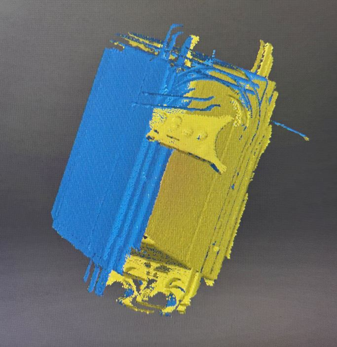
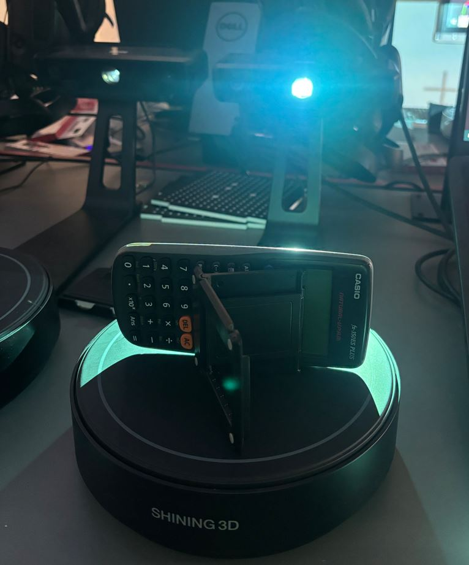
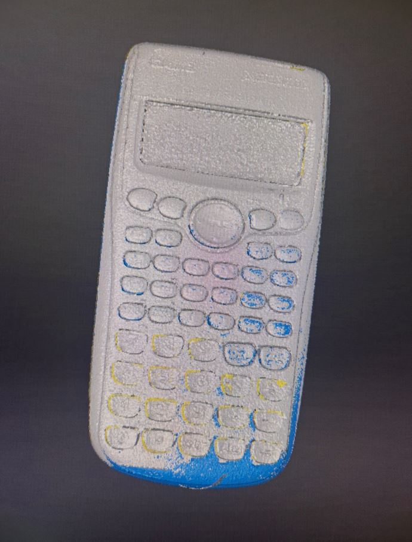
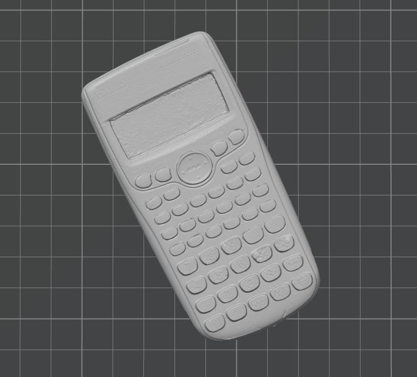
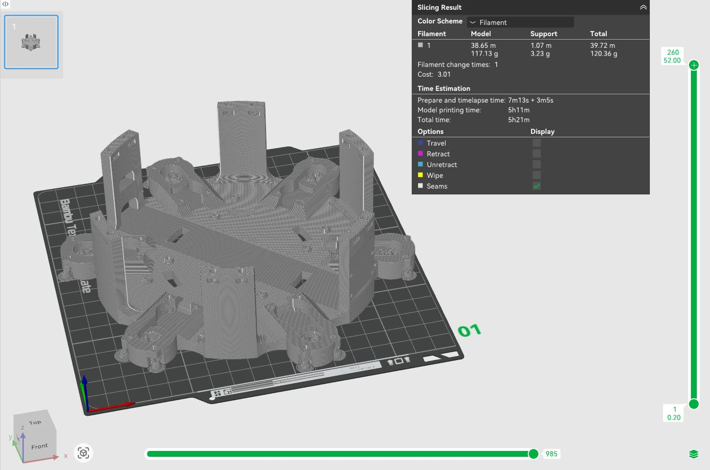
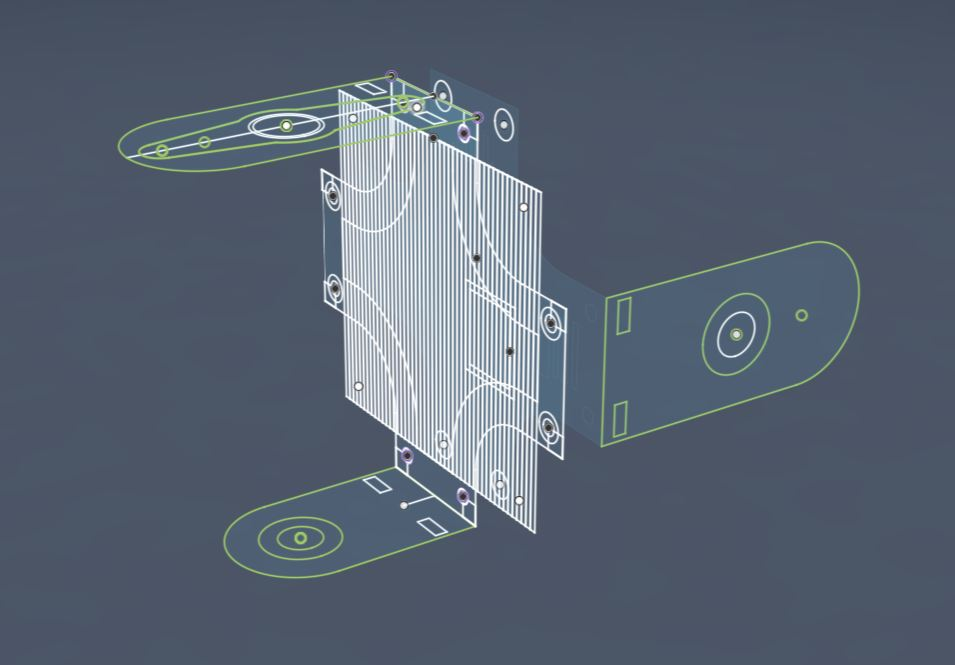

3. týden: 3D skenování a 3D tisk Week 3: 3D Scanning and 3D Printing
Během třetího týdne bylo úkolem naskenovat nějaký objekt pomocí fotogrammetrie nebo 3D skeneru a vymodelovat objekt, který by se těžko vyráběl subtraktivní metodou.
During the third week, the task was to scan an object using photogrammetry or a 3D scanner and model an object that would be difficult to manufacture using a subtractive method.
3D skenování 3D scanning
Mým cílem bylo naskenovat objekt, jehož digitální model využiji ve svém závěrečném projektu. Zvolil jsem tedy servo MG996R spolu s nasazovací pákou, u kterých potřebuji znát přesné rozměry. My goal was to scan an object whose digital model I will use in my final project. Therefore, I chose the MG996R servo along with the attachable horn, for which I need to know the exact dimensions.

K měření jsem využil školní 3D skener EinScan-SE. Protože tento přístroj má potíže při snímání černých objektů, nastříkal jsem povrch serva bílým skenovacím sprejem. Ten je sice snadno stíratelný, což usnadňuje čištění, ale vyžaduje opatrnou manipulaci při schnutí a při přenosu na skener. For the measurement, I used the school's EinScan-SE 3D scanner. Because this device has trouble capturing black objects, I sprayed the surface of the servo with a white scanning spray. Although it is easily erasable, which makes cleaning easier, it requires careful handling while drying and during transfer to the scanner.

V ovládacím softwaru jsem nastavil skenování s automatickou rotací objektu. Použil jsem nastavení: rychlost 10, 8 snímků na jednu otočku. Vzhledem ke geometrické jednoduchosti modelu jsem zvolil metodu Turntable Alignment, která zarovnává data podle úhlu otočení podložky. Při každém pokusu se však objevila stejná chyba - nové skeny byly vůči těm předchozím, vzniklým v rámci stejné otočky, špatně zarovnány. Nepomohla změna orientace serva, kalibrace přístroje ani přepnutí na metodu Feature Alignment. In the control software, I set the scanning with automatic object rotation. I used the settings: speed 10, 8 frames per rotation. Given the geometric simplicity of the model, I chose the Turntable Alignment method, which aligns the data according to the rotation angle of the pad. However, the same error appeared with every attempt - the new scans were poorly aligned relative to the previous ones generated within the same rotation. Changing the orientation of the servo, calibrating the device, or switching to the Feature Alignment method did not help.
Zpětně mě napadá, že by problém možná vyřešilo použití metody Feature Alignment a přidání nějakého geometricky složitějšího objektu, díky čemuž by skener získal záchtné body pro zarovnání skenů. Tento objekt bych následně v postprocesingu odstranil. Looking back, it occurs to me that the problem might have been solved by using the Feature Alignment method and adding a geometrically more complex object, which would provide the scanner with reference points for aligning the scans. I would then remove this object in post-processing.

Jako záložní variantu jsem si připravil holicí strojek OneBlade. Jeho model plánuji využít pro návrh a tisk vlastního stojánku. Černé části jsem opět opatřil křídovým nástřikem. Problémy se špatným zarovnáním se však bohužel opakovaly i u tohoto objektu. As a backup option, I prepared a OneBlade shaver. I plan to use its model to design and print a custom stand. I again coated the black parts with a chalk spray. Unfortunately, the problems with poor alignment repeated with this object as well.


Přesunul jsem se proto k jinému pracovišti (skener č. 4) a zvolil nový objekt - sluchátko. Tento sken se vydařil hned napoprvé. V postprocesingu jsem pomocí klávesy Shift ručně odstranil přebytečné body (šum) v okolí objektu. Při převodu point cloudu na mesh jsem zvolil střední kvalitu a režim watertight mesh (uzavřený model). Therefore, I moved to another workstation (scanner no. 4) and chose a new object - an earphone. This scan was successful right on the first try. In post-processing, I manually removed excess points (noise) around the object using the Shift key. When converting the point cloud to a mesh, I chose medium quality and the watertight mesh (closed model) mode.


Zbývající čas jsem využil ke skenování kalkulačky. Vrátil jsem se k původnímu stanovišti, ale tentokrát jsem nevyužil automatické otáčení. Kalkulačku jsem polohoval manuálně pomocí stojánku a každý snímek spouštěl samostatně. I used the remaining time to scan a calculator. I returned to the original station, but this time I did not use the automatic rotation. I positioned the calculator manually using a stand and triggered each frame separately.

Tento postup byl úspěšný a jednotlivé vrstvy na sebe přesně navazovaly. Případné artefakty (šum, držák zachycený ve skenu) jsem průběžně odmazával. Celkem jsem provedl 20 skenů z různých úhlů, dokud nebyl model kompletní a bez děr. Výsledný mesh jsem opět generoval ve střední kvalitě jako uzavřený objekt. This procedure was successful, and the individual layers aligned perfectly. I continuously erased any artifacts (noise, the holder captured in the scan). In total, I made 20 scans from different angles until the model was complete and without holes. I again generated the final mesh in medium quality as a closed object.



3D tisk - Stojan pro hexapoda 3D printing - Hexapod stand
Úkol z tohoto týdne jsem se rozhodl využít k rozpracování svého závěrečného projektu - hexapoda. Prvním krokem bylo vytvoření stojanu. Ten mi umožní robota bezpečně programovat a testovat, aniž by se jeho nohy dotýkaly země a hrozilo poškození. Aby byl stojan stabilní a nepřevrhl se, tvoří jeho základnu pětikilový kovový kotouč, ze kterého vychází 21 cm dlouhá kovová tyč. I decided to use this week's task to advance my final project - the hexapod. The first step was to create a stand. This will allow me to safely program and test the robot without its legs touching the ground, preventing potential damage. To make the stand stable and prevent it from tipping over, its base consists of a five-kilogram metal weight plate, from which a 21 cm long metal rod extends.

Bylo nutné navrhnout tři plastové díly: jeden pro fixaci tyče v čince a dva pro horní část, která bude sloužit jako samotný držák hexapoda. K modelování jsem použil Fusion 360. U každého dílu jsem začínal tvorbou náčrtu (sketch). Využíval jsem parametrické modelování a dával jsem si pozor na to, aby byl každý náčrt plně definovaný (fully constrained). Díky tomu mohu v budoucnu snadno měnit klíčové rozměry stojanu. It was necessary to design three plastic parts: one for fixing the rod in the weight plate and two for the upper part, which will serve as the actual holder for the hexapod. I used Fusion 360 for modeling. For each part, I started by creating a sketch. I used parametric modeling and was careful to make sure each sketch was fully constrained. Thanks to this, I can easily change the key dimensions of the stand in the future.
Před tiskem rozměrnějších dílů doporučuji provést malý testovací tisk, abyste ověřili správné tolerance otvorů pro šrouby. Jelikož už ale mám tiskárnu otestovanou z dřívějška, tento krok jsem přeskočil. Pro šrouby M3 spojující horní dva díly jsem použil průměr otvoru 3 mm. Během prvního tisku horního držáku jsem udělal fixační zobáčky stejně velké jako otvory v základně hexapoda a díly tak do sebe nezapadaly. Před druhým tiskem jsem proto zobáčky pomocí funkce Offset Face o 0,15 mm zmenšil. Before printing larger parts, I recommend doing a small test print to verify the correct tolerances of the screw holes. However, since I have already tested the printer previously, I skipped this step. For the M3 screws connecting the top two parts, I used a hole diameter of 3 mm. During the first print of the top holder, I made the fixing tabs the same size as the holes in the hexapod's base, so the parts did not fit together. Before the second print, I therefore shrunk the tabs by 0.15 mm using the Offset Face function.

Hotové modely jsem exportoval (Utilities -> 3D print) do formátu 3MF a připravil k tisku v Bambu Studiu. Jako materiál jsem zvolil PLA. Tiskl jsem na 3D tiskárně Bambu Lab A1 Mini s tryskou o průměru 0,4 mm a s následujícím nastavením: I exported the finished models (Utilities -> 3D print) to the 3MF format and prepared them for printing in Bambu Studio. I chose PLA as the material. I printed on the Bambu Lab A1 Mini 3D printer with a 0.4 mm nozzle and the following settings:
- Profil: 0.20 mm Standard @BBL A1M Profile: 0.20 mm Standard @BBL A1M
- Nozzle temperature (teplota trysky): 210 °C Nozzle temperature: 210 °C
- Bed temperature (teplota podložky): 65 °C Bed temperature: 65 °C
- Wall loops (perimetry): 4 Wall loops: 4
- Sparse infill density (hustota výplně): 20 % Sparse infill density: 20 %
- Sparse infill pattern (vzor výplně): Gyroid Sparse infill pattern: Gyroid
- Outer wall speed (rychlost tisku vnější stěny): 60 mm/s Outer wall speed: 60 mm/s
Zbylá nastavení jsem nechal na výchozích hodnotách vybraného tiskového profilu. I left the remaining settings at the default values of the selected print profile.


Po sestavení měl spodní plastový díl v otvoru činky drobnou vůli. Vyřešil jsem to tak, že jsem stěny otvoru vyložil igelitovým sáčkem a díl jsem do něj zatlačil pomocí svěráku. Igelit vyplnil volný prostor a stojan teď drží velmi pevně. Horní dva díly jsem sešrouboval pomocí šroubů M3 × 8 mm. After assembly, the bottom plastic part had a slight play in the hole of the weight plate. I solved this by lining the walls of the hole with a plastic bag and pressing the part into it using a vise. The plastic filled the free space, and the stand now holds very firmly. I screwed the top two parts together using M3 × 8 mm screws.

3D tisk - Základna a část nohy hexapoda 3D printing - Hexapod base and leg segment
Po dokončení stojanu jsem se přesunul k výrobě spodní části základny a kyčelních kloubů samotného robota. Základna má šestiúhelníkový půdorys a je navržena tak, aby se přesně vešla na tiskovou plochu o rozměrech 18 × 18 cm. Kromě mechanické pevnosti musí mít dostatek prostoru pro baterii, dva PWM moduly PCA9685 pro řízení motorů a šest servomotorů MG996R, které budou zajišťovat horizontální pohyb nohou. After completing the stand, I moved on to manufacturing the bottom part of the base and the hip joints of the robot itself. The base has a hexagonal footprint and is designed to fit exactly on a 18 × 18 cm build plate. In addition to mechanical strength, it must have enough space for the battery, two PCA9685 PWM modules for motor control, and six MG996R servomotors that will provide horizontal leg movement.
Aby celá hmotnost robota neležela pouze na hřídelích servomotorů, umístil jsem na jejich spodní stranu opěrné ložisko, které převezme část zátěže. Pro úsporu místa a lepší uchycení serva jsem odstranil jeho původní spodní kryt. Místo něj jsem navrhl kryt nový, který již obsahuje prostor pro ložisko a je přímo integrován do těla základny. Servo je k základně upevněno přes dlouhé šrouby, které držely jeho původní kryt. Moduly PCA9685 jsem přišrouboval pomocí šroubů M2 × 8 mm do otvorů o průměru 2 mm. So that the entire weight of the robot does not rest only on the servomotor shafts, I placed a support bearing on their bottom side, which will take over part of the load. To save space and improve the servo mounting, I removed its original bottom cover. Instead, I designed a new cover that already contains space for the bearing and is integrated directly into the body of the base. The servo is attached to the base using the long screws that held its original cover. I screwed the PCA9685 modules using M2 × 8 mm screws into holes with a diameter of 2 mm.

Při tvorbě náčrtu šestiúhelníkové základny ve Fusion 360 jsem pracoval pouze na jedné šestině modelu. Tu jsem následně pětkrát zkopíroval kolem středové osy pomocí nástroje Circular Pattern. When creating the sketch of the hexagonal base in Fusion 360, I worked on only one sixth of the model. I then copied it five times around the central axis using the Circular Pattern tool.


Základnu jsem tiskl se stejnými parametry jako stojan. Kvůli složitější geometrii jsem používal podpěry. Nastavil jsem je takto: I printed the base with the same parameters as the stand. Due to the more complex geometry, I used supports. I set them as follows:
- Type: Tree (auto) Type: Tree (auto)
- Top Z distance (mezera v ose Z): 0.25 mm Top Z distance: 0.25 mm
Ostatní parametry u podpor zůstaly výchozí. Other support parameters remained at their defaults.


Odstraňování stromových podpor pomocí malých štípacích kleští a skalpelu mi zabralo zhruba dvacet minut. Zanechaly po sobě hrubší povrch, což však nevadí, jelikož byly zespodu robota a většina hrubého povrchu je překryta ložisky. Removing the tree supports using small cutting pliers and a scalpel took me roughly twenty minutes. They left a rougher surface behind, which does not matter, as it is on the bottom of the robot and most of the rough surface is covered by bearings.


Díl tvořící kyčel robota je navržen tak, aby servomotor držel ze dvou stran - shora je přišroubován k hřídeli a zespodu se opírá o zmíněné ložisko, díky čemuž není veškerá zátěž na hřídeli. Pro lepší přenos krouticího momentu má v sobě tento díl otvor ve tvaru nasazovací páky serva. Původně jsem chtěl model páky získat 3D skenováním, ale jak jsem psal výše, to se bohužel nepovedlo. Model jsem tedy stáhl z internetu a pomocí nástroje Project jsem do horního dílu kyčle promítnul jeho obrys. Pomocí funkce Offset Face jsem vytvořil několik testovacích dílů s různými vůlemi a vytiskl je. Páka nejlépe zapadala do otvoru s offsetem 0,17 mm. The part forming the robot's hip is designed so that the servomotor holds it from two sides - from above it is screwed to the shaft, and from below it rests on the mentioned bearing, so not all the load is on the shaft. For better torque transmission, this part has a hole shaped like the servo's attachable horn. Originally, I wanted to get the model of the horn by 3D scanning, but as I wrote above, that unfortunately failed. So I downloaded the model from the internet and projected its outline into the upper part of the hip using the Project tool. Using the Offset Face function, I created several test parts with different clearances and printed them. The horn fit best into the hole with a 0.17 mm offset.
Jednotlivé části nohy jsou navzájem spojeny pomocí šroubů M2 × 12 mm a matek zapuštěných do plastových dílů. Tyto díly jsem tiskl bez podpor se stejným nastavením jako v předchozích případech. The individual parts of the leg are connected to each other using M2 × 12 mm screws and nuts embedded in the plastic parts. I printed these parts without supports using the same settings as in the previous cases.



A tady je fotka výsledku: And here is a photo of the result: